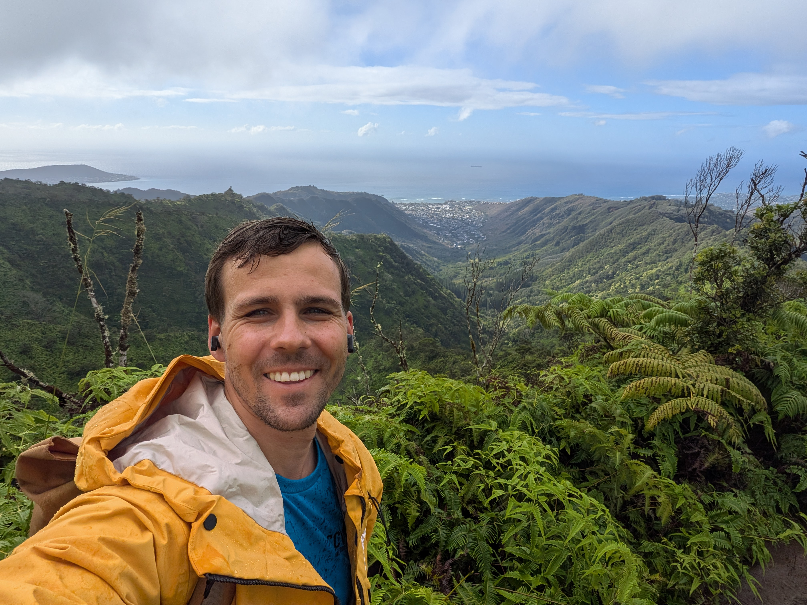
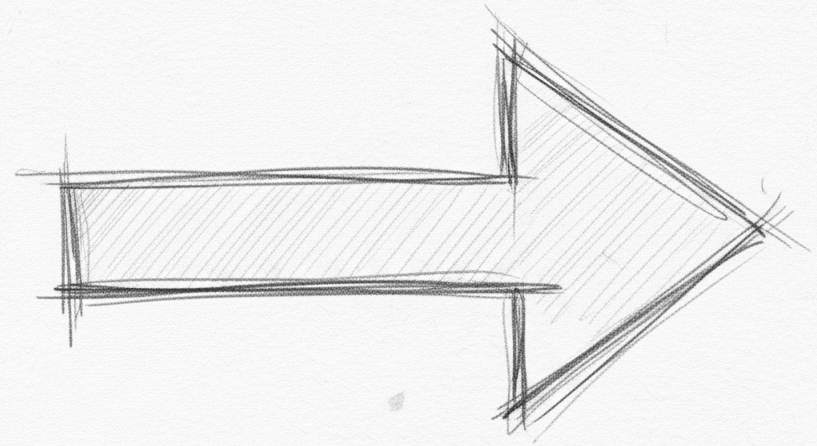
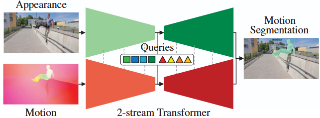
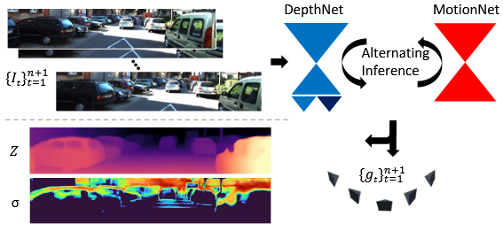

Christian Homeyer
About Me
Hi!👋
I'm a PhD candidate at Heidelberg University working on 3D/4D reconstruction.
Ex-Research Intern at Apple.
Some years ago I was at Bosch Research.
My research focuses on reconstructing dynamic scenes from a single camera.
I have done work on:
- Monocular Depth Prediction
- Motion Segmentation
- SLAM & 3D Rendering
- Lighting Estimation (collaboration with Haebom Lee )
- 3D Point Cloud Registration (Master thesis @ IRP, under Jochen Steil, Milad Malekzadeh )
- Medical Image Classification (with Stefania Petra, to be published)
I'm grateful that I get to live and work during the Deep Learning revolution and a new robotics renaissance. I started the PhD, because I wanted to learn more about perception and intelligence in the context of 3D geometry. Never thought I would see all of this implemented in actual robots in my lifetime!
Publications


How to build SotA monocular SLAM with photo-realistic Rendering?
We extended an end-to-end Tracker with a i) loop detector ii) loop closure mechanism iii) camera calibration iv) monocular prior integration.
Together with a photo-realistic Renderer, we can robustly map casual videos (dynamic objects are automatically filtered out).
All components run in parallel on a consumer-grade GPU.

How to improve lighting estimation from video?
When using monocular video, predictions can quickly get noisy.

Use sequences of random crops and robust aggregation of noisy estimates.
Which monocular pseudo-modalities are best for generic motion segmentation?
We revisited the motion segmentation problem with a multi-modal network. Surprisingly even
3D scene flow from relative depth maps can give a strong signal for motion segmentation.
We systematically built up our datasets to iron out edge cases and try out multiple fusion mechanisms.
Works very well with scale consistent depth now in 2025!

If we do not model dynamic motion inside our network, will we have a bias in our depth predictions? Turns out that by modeling an additional uncertainty, we can explain many systematic errors on moving objects: especially LiDAR provides only sparse supervision. Scaling up datasets with better groundtruth (like synthetic data) should be enough without explicitly modeling dynamics! We analyzed supervised vs. unsupervised training and the synth-to-real gap for some datasets - All done in TensorFlow 2 (it was a long time ago ¯\_(ツ)_/¯ )
Other Interests
Outside of research, I like to decompress outdoors and get away from anything digital.
I love hiking, skiing and climbing.
I am a proud parent of a biological learner - Seeing (and helping) another person learn and grow
turned out to be one of the most satisfying experiences I ever felt. Very grateful to have my family.
... also surprisingly makes you more commited to better time management.